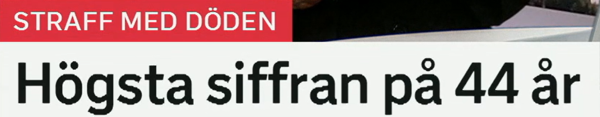
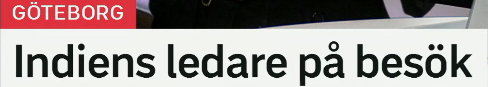
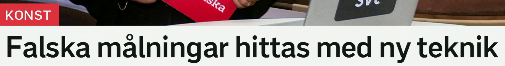
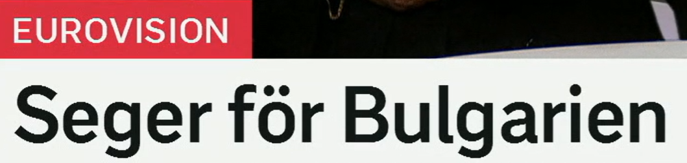

Sjukdomen ebola sprids
埃博拉疾病正在传播。
来自 en sjukdom，疾病。词族：sjuk 生病的，sjukvård 医疗，smittsam sjukdom 传染病，folksjukdom 常见病。
Sjukdomen upptäcktes tidigt. 这种疾病被早期发现。
原形 sprida 传播；sprids = 被传播/正在传播。相关词：spridning 传播，smitta 感染，utbrott 暴发。
Ryktet sprids snabbt på nätet. 谣言在网上迅速传播。
疾病名通常不用冠词，但前面加 sjukdomen 时可以强调“这种疾病”。新闻中也会看到 ebolautbrott 埃博拉疫情暴发。
Myndigheterna varnar för ett ebolautbrott. 当局警告埃博拉疫情暴发。
被动标题
瑞典语常用 -s 表示被动或非主动事件：sprids 传播开来，hittas 被发现，stängs 被关闭。

Högsta siffran på 44 år
44 年来的最高数字。
字面是“以死亡作为惩罚”，即死刑。更常见单词是 dödsstraff。词族：straff 惩罚，straffa 惩罚，dömd 被判刑的。
Flera länder har avskaffat dödsstraffet. 多个国家已废除死刑。
来自 hög 高的；比较级 högre，最高级 högst/högsta。搭配：högsta nivån 最高水平，högsta domstolen 最高法院。
Priserna är på den högsta nivån i år. 价格处于今年最高水平。
en siffra 数字、数据。区别：tal 更偏“数/数字整体”，statistik 统计数据，antal 数量。
Siffran visar en tydlig ökning. 这个数字显示明显增长。
在“最高/最低/最大”等表达后，på X år 常表示“X 年来”。例如 lägsta nivån på tio år 十年来最低水平。
Det är den varmaste dagen på 30 år. 这是 30 年来最热的一天。
统计新闻句型
Högsta siffran på X år = X 年来的最高数字。可以替换成 lägsta 最低、största ökningen 最大增长。

Indiens ledare på besök
印度领导人到访。
Indien 印度；Indiens = 印度的。国家名所有格常直接加 -s：Sveriges regering 瑞典政府，Kinas ekonomi 中国经济。
Indiens ekonomi växer snabbt. 印度经济快速增长。
en ledare 领导人、负责人；来自动词 leda 领导、带领。相关词：ledning 领导层/管理，partiledare 党魁，företagsledare 企业领导。
Landets ledare höll ett tal. 该国领导人发表讲话。
表示“来访、在访问中”。动词搭配：vara på besök 正在访问，komma på besök 来访问，göra ett besök 进行一次访问。
Min syster är på besök i helgen. 我姐姐这个周末来访。
地点标签 + 名词短语
标题标签 GÖTEBORG 给出地点，正文标题只说谁来访。完整句可写：Indiens ledare är på besök i Göteborg.

Falska målningar hittas med ny teknik
用新技术发现假画。
falsk 假的、伪造的；复数是 falska。相关词：förfalska 伪造，förfalskning 伪造品，äkta 真的。
Museet hittade ett falskt dokument. 博物馆发现了一份伪造文件。
en målning 一幅画；动词 måla 画画、刷漆。相关词：konstverk 艺术品，tavla 画/板，konstnär 艺术家。
Utställningen visar flera kända målningar. 展览展示多幅名画。
原形 hitta 找到；hittas = 被发现/能被找到。新闻里常见：mannen hittades 该男子被发现，spår hittas 发现痕迹。
Nya spår hittas i utredningen. 调查中发现新线索。
med 可以表示“用、借助”。teknik 是技术；相关词：teknisk 技术的，teknologi 科技，AI-teknik 人工智能技术。
Forskarna analyserar bilderna med ny teknik. 研究人员用新技术分析图像。
发现类标题
X hittas med Y = X 被 Y 找到/发现。注意 hittas 不强调谁发现，而强调结果和方法。

Seger för Bulgarien
保加利亚获胜。
en seger 胜利；动词 segra 获胜。相关词：vinnare 赢家，vinst 胜利/盈利，förlust 失败/亏损。
Laget firade sin seger. 队伍庆祝胜利。
för 在这里表示“对……而言/属于……的”。新闻标题里 seger för X 很常见，即“X 获胜”。
Det blev seger för Sverige i finalen. 瑞典在决赛中获胜。
保加利亚。相关形容词和人：bulgarisk 保加利亚的，en bulgar 保加利亚人，bulgariska 保加利亚语。
Den bulgariska artisten fick flest röster. 那位保加利亚艺人获得最多票数。
结果标题
Seger för X 是体育、比赛、政治投票里都能用的压缩标题。完整句可说：Bulgarien vann.
复习表：从标题词扩到词族
| 关键词 | 延伸词汇 | 记忆角度 |
|---|---|---|
| sjukdom | sjuk, sjukvård, smittsam, smitta, utbrott | 疾病与公共卫生 |
| sprids | sprida, spridning, spridd, spridas | -s 被动/传播开来 |
| högsta | hög, högre, högst, lägsta, nivå, siffra | 比较级与最高级 |
| ledare | leda, ledning, partiledare, företagsledare | 领导与管理 |
| hittas | hitta, hittades, upptäcka, fynd, spår | 被发现、找到线索 |
| seger | segra, vinnare, vinna, vinst, förlust | 胜负结果 |
练习 1
把“疾病正在快速传播”译成瑞典语。提示：Sjukdomen sprids snabbt.
练习 2
说“十年来最高数字”。提示：högsta siffran på...
练习 3
用 på besök 写“部长正在哥德堡访问”。提示：Ministern är...
练习 4
把“发现了新的线索”译成瑞典语。提示：Nya spår hittas.